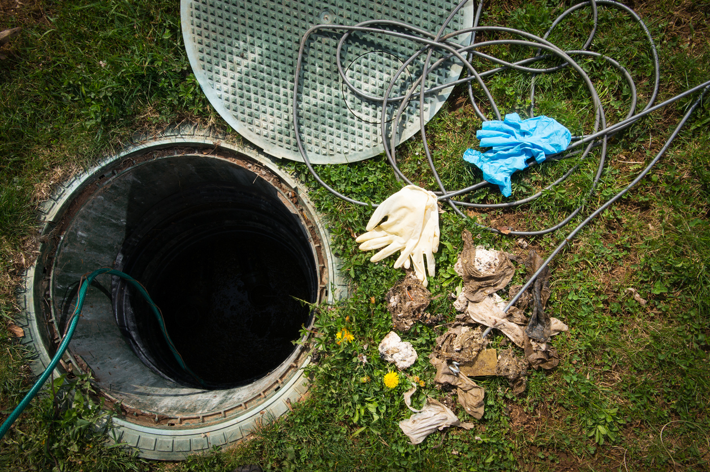

System Review
A practical review of the septic system and available service information.

Regular septic maintenance helps identify developing concerns, support proper system performance, and keep your wastewater system operating reliably.

Septic systems work continuously below ground, making regular maintenance an important part of understanding their condition and performance.
Routine service can help identify changes in drainage, system condition, and other concerns before they become more difficult to address.
A consistent maintenance approach also makes it easier to plan future service around household needs and system requirements.
Regular attention helps keep your septic system operating as intended.
Maintenance provides an opportunity to notice changes before they develop further.
A clear service schedule makes septic care easier to organize and manage.
Our routine maintenance service focuses on practical checks and observations that help you understand your septic system and plan appropriate care.
A practical review of the septic system and available service information.
Attention to drainage and flow-related changes that may indicate a developing concern.
Guidance for organizing future pumping, inspection, maintenance, or repair needs.
A closer look at observable system conditions that may require additional attention.
Maintenance requirements and service frequency can vary depending on system design, household usage, tank capacity, system age, and overall condition.
Routine maintenance should be planned around your septic system's condition, household usage, and service history.
Paying attention to changes between service visits can also help you know when additional professional support may be appropriate.
Keep maintenance aligned with your system's established service needs.
Increased occupancy or changes in water use may affect maintenance requirements.
Slow drains or unusual wastewater behavior should not be ignored.
Schedule a professional review when you notice conditions that require attention.


Keep your septic system on a practical maintenance schedule with professional support from ClearFlow.